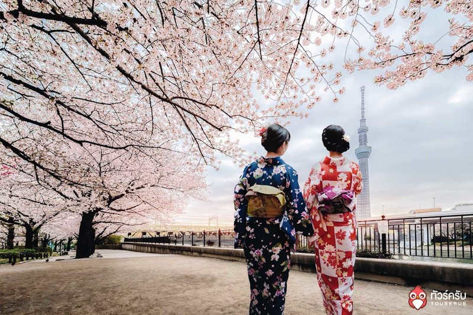
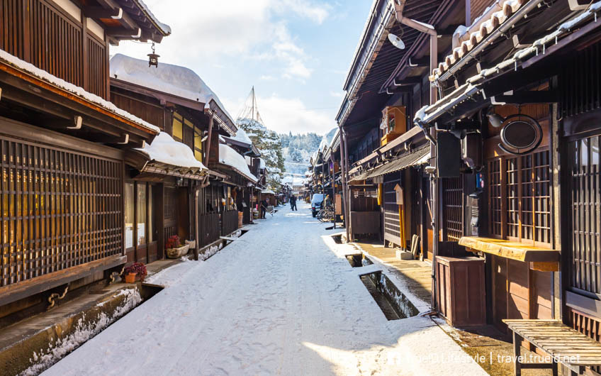
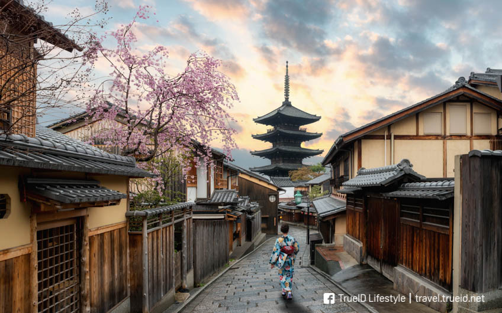
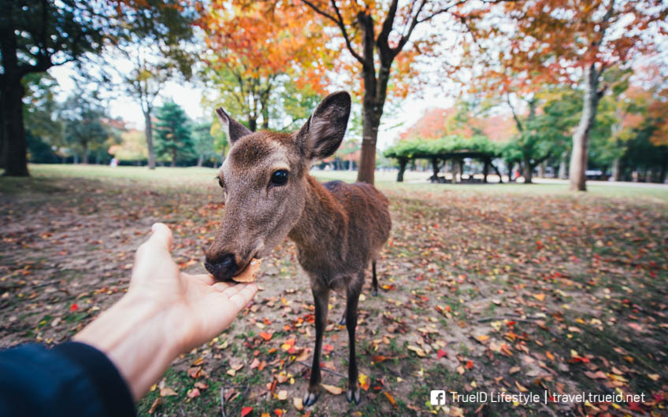
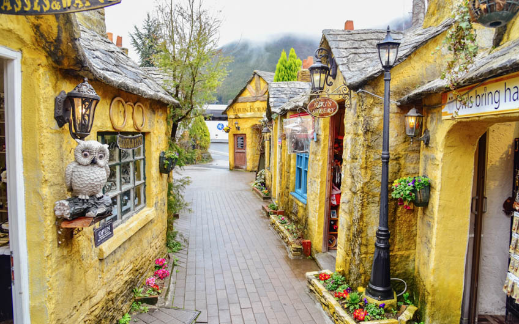

Shirakawago ชิราคาว่าโกะ
เริ่มต้นหมู่บ้านโบราณแรก ที่เที่ยวสวย ญี่ปุ่น ดีกรีมรดกโลก อย่างหมู่บ้าน Shirakawago นั่นเองครับ คงไม่ต้องบอกเรื่องความสวยงาม และความขลังของสถานที่แห่งนี้ เพราะมันสวยมาก ที่สำคัญคือเที่ยวได้ทั้งปี แถมแต่ละฤดูก็ได้วิวที่ต่างกันไป ยิ่งถ้าหากได้ไปในช่วงฤดูหนาว จะได้เห็นหิมะ สีขาวทั่วทั้งหมู่บ้านเลย

Takayama ทาคายาม่า
เมืองฝาแฝดเกียวโต ประจำจังหวัดกิฟุ อย่างหมู่บ้าน Takayama ก็สวยจนไปกี่ครั้งไม่เคยเบื่อ รวไมปถึงถ้าให้ชื่นชอบบ้านไม้เก่าๆ สไตล์ญี่ปุ่นด้วยล่ะก็ หูยยยย จะต้องหลงรักที่นี่อย่างแน่นอน แม้จะเป็นทางผ่านที่ไปหมู่บ้านชิราคาว่าโกะ แต่ก็น่าสนใจไม่น้อย

Kyoto เกียวโต
มาดูเมืองเก่า ญี่ปุ่น ต้นฉบับกันบ้าง กับเมืองเกียวโต คงไม่ต้องบอก ก็น่าจะรู้กันดีว่าที่นี่เคยเป็นอดีตเมืองหลวงเก่าของประเทศนี้ มีวัด และศาลเจ้าเยอะแยะมากมาย ให้เหล่านักท่องเที่ยวเข้ามากราบไหว้ รวมไปถึงบ้านไม้สไตล์ญี่ปุ่น ที่ยังมีให้เห็นเยอะในเมืองนี้

Nara นารา
เมืองนารา ดีกรีเมืองมรดกโลกอีกเช่นกัน จุดเด่นของเมืองนี้คือเจ้าฝูงกวางน้อย ที่รอต้อนรับนักท่องเที่ยว ยิ่่งถ้าให้ถืออาหารอยู่ในมือด้วยล่ะก็ หื้มมม โดนเจ้ากวางฟาดเรียบอย่างแน่นอน

Yufuin ยุฟุอิน
เมืองเก่าที่ถูกผสมผสานอย่างลงตัวระหว่างญี่ปุ่น และยุโรป อย่างเมืองยุฟุอิน แน่นอนว่ามาเดินเล่นชิลล์ๆ เมืองนี้ทั้งที ก็ต้องลงแช่ออนเซ็นสักหน่อย เพราะเนื่องจากมันโด่งดังมากๆ รวมไปถึงวิวภูเขายูฟุ ที่สูงสง่ากลางเมือง